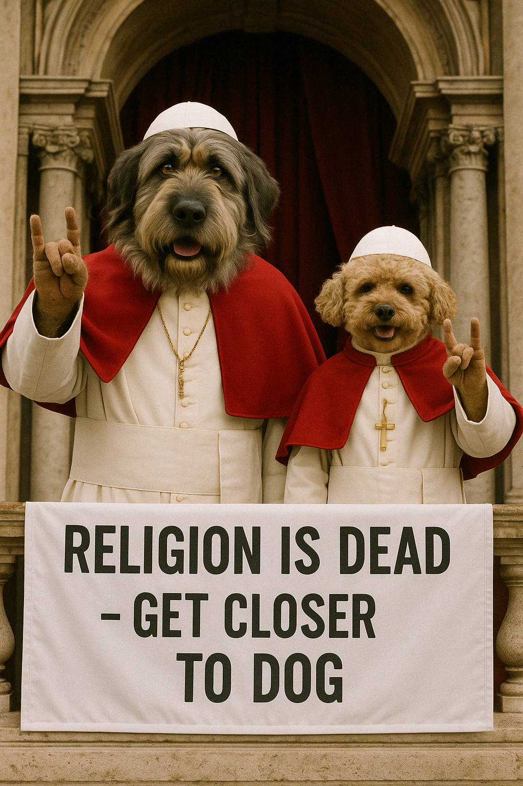
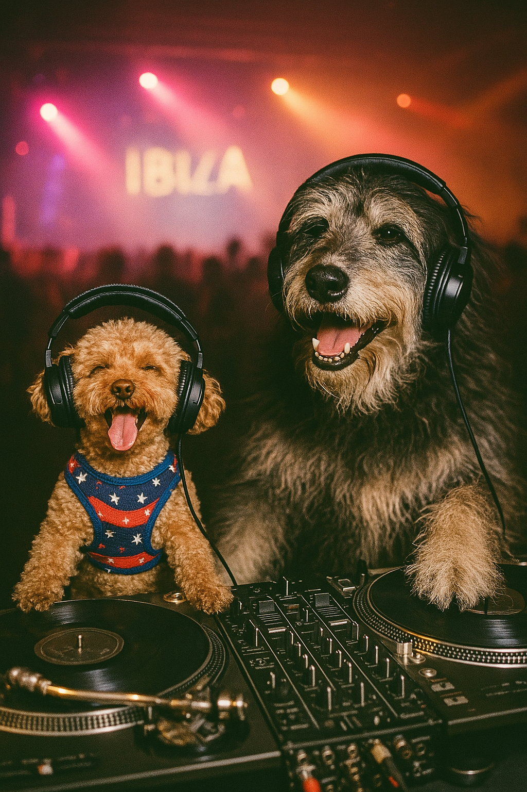
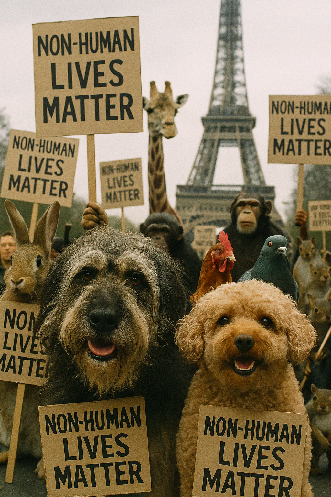
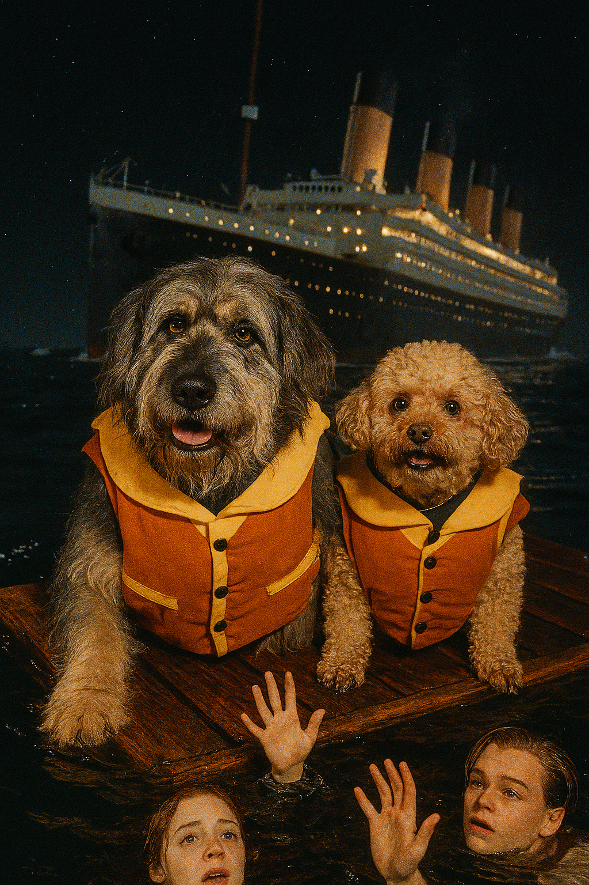
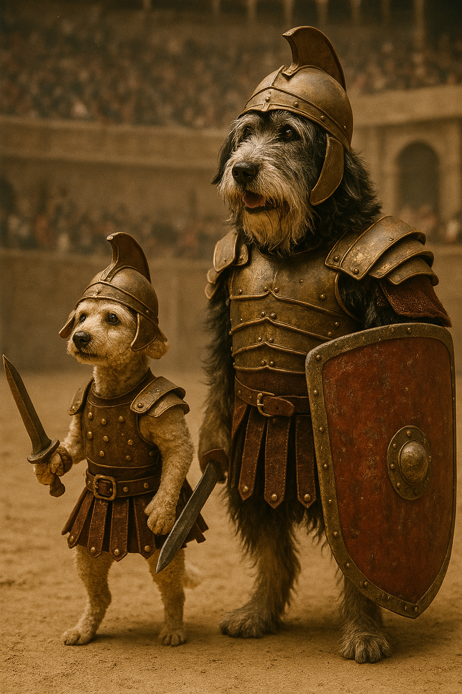
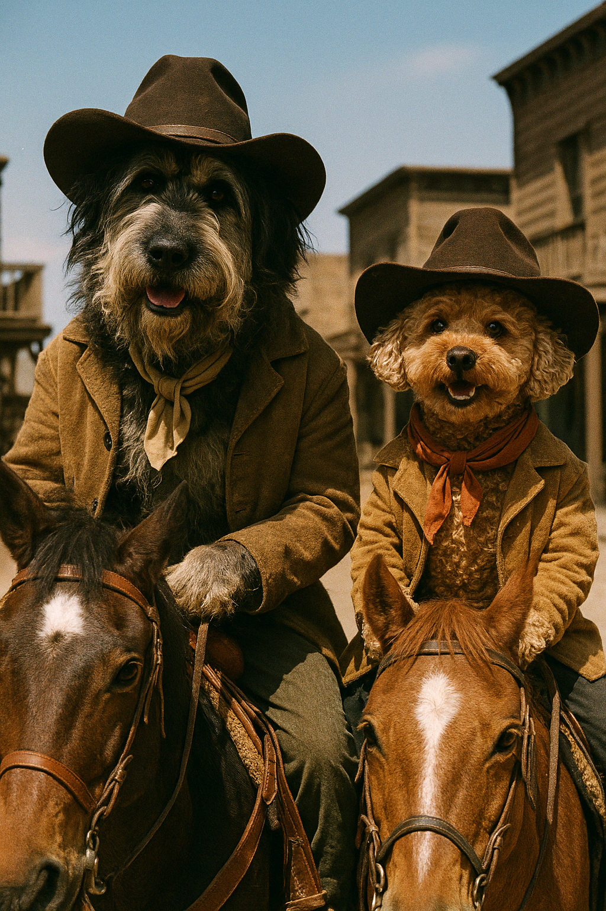
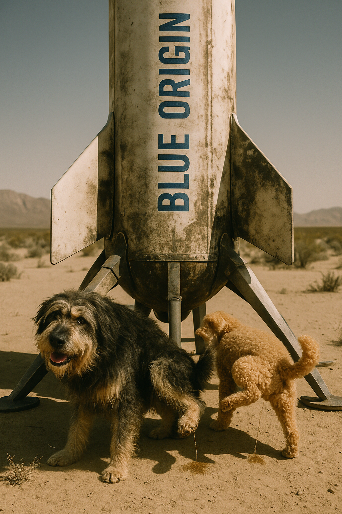
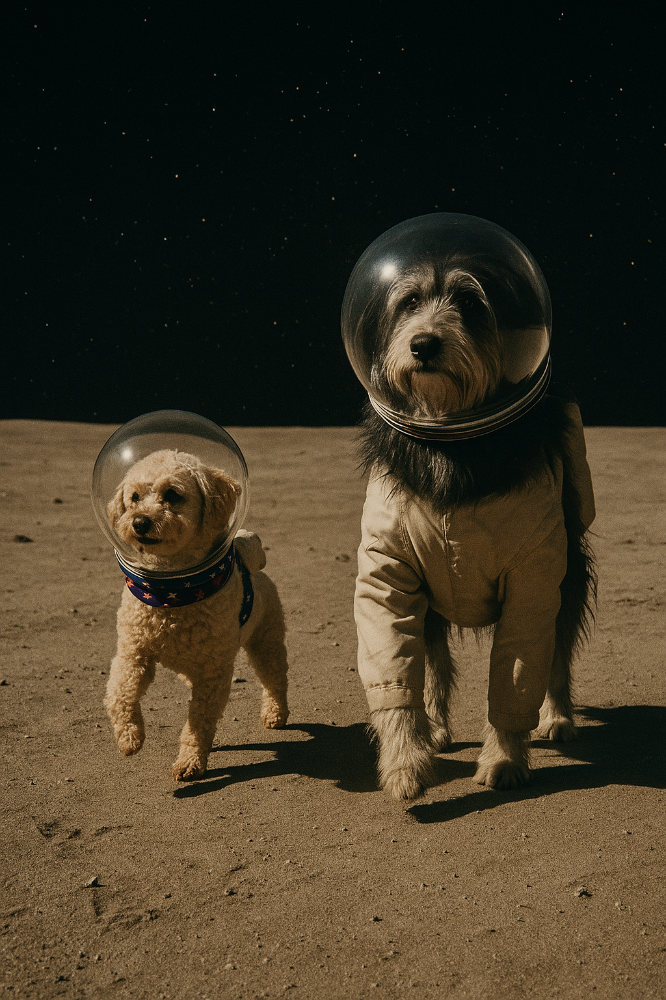
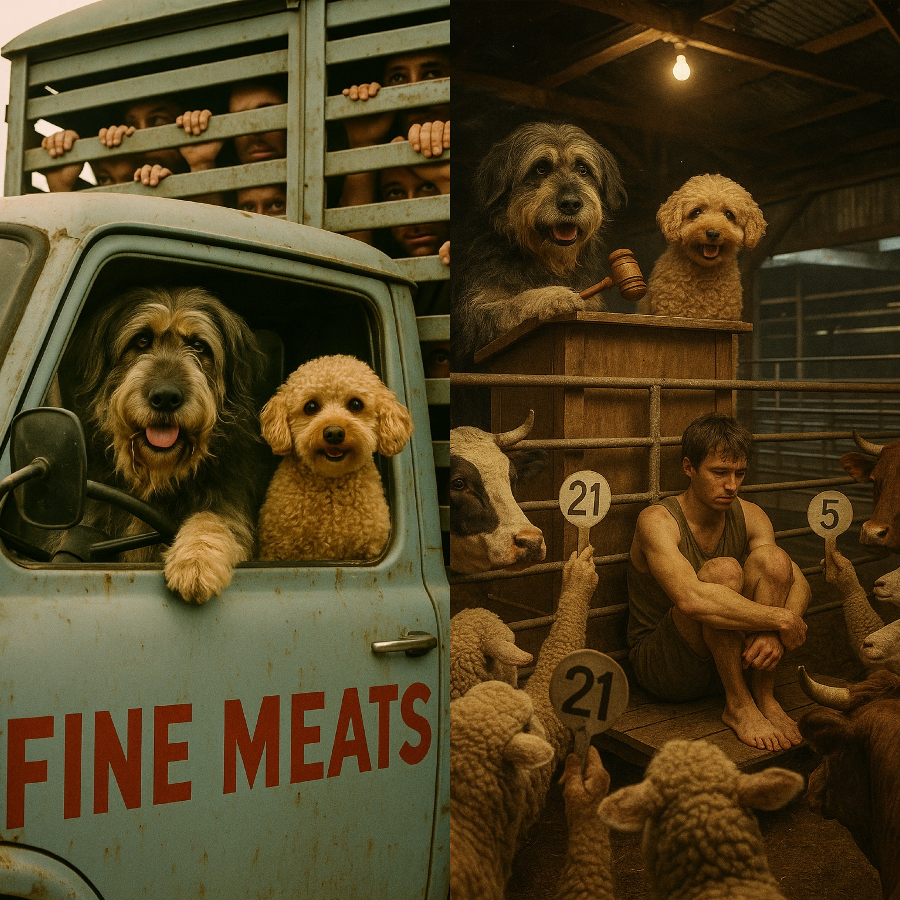

A Philozoic Worldview
Alfred is small. Hudson is enormous. Neither has noticed.
Two real dogs. One satirical universe. Alfred (Toy Poodle X) and Hudson (Goldie X Smithfield) have been watching humans run the world for years — the politics, the posturing, the inexplicable obsession with status — and they have notes.
Their friendship asks a simple question: if a tiny poodle and a giant farm dog can figure it out, what's everyone else's excuse?
Philosophers. Satirists. Very good boys.


Alfred and Hudson didn't set out to become the world's most incisive social commentators. They just started paying attention. To the way humans treat each other. To the systems people build and then forget to question. To the gap between how things are and how they could be — if only everyone behaved a little more like a dog.
"Their easy friendship — despite the disparity in size and breed — is the whole point."
Together they've infiltrated politics, religion, celebrity culture, finance, and the food industry. Everywhere humans have made a mess, Alfred and Hudson have shown up to observe, judge, and occasionally steal the vol-au-vents.
A growing body of satirical work placing Alfred and Hudson at the centre of human folly — from Ibiza to the Vatican, from the Titanic to the trading floor.


Told you there was room for two.





Pequeño y Grande is a satirical universe built around a simple inversion: what if the species that got it right were watching the species that didn't? Alfred and Hudson aren't pets playing dress-up. They're witnesses. Commentators. The straight men in a world that's lost the plot.
The philozoic worldview — a love of animals as a lens on humanity — is the engine. The comedy is the vehicle. The discomfort is the point.
Alfred and Hudson as recurring satirical commentators — each episode a new target, a new world turned upside down.
Coffee table satire. The images already exist as a body of work. The book writes itself.
A content universe that lives natively on social — episodic, reactive, built for sharing and debate.
Alfred and Hudson as a live format — panel show, satirical news programme, awards ceremony host.
Pequeño y Grande is available for development, licensing and collaboration.
Get in touch ← Back to Sami Booth